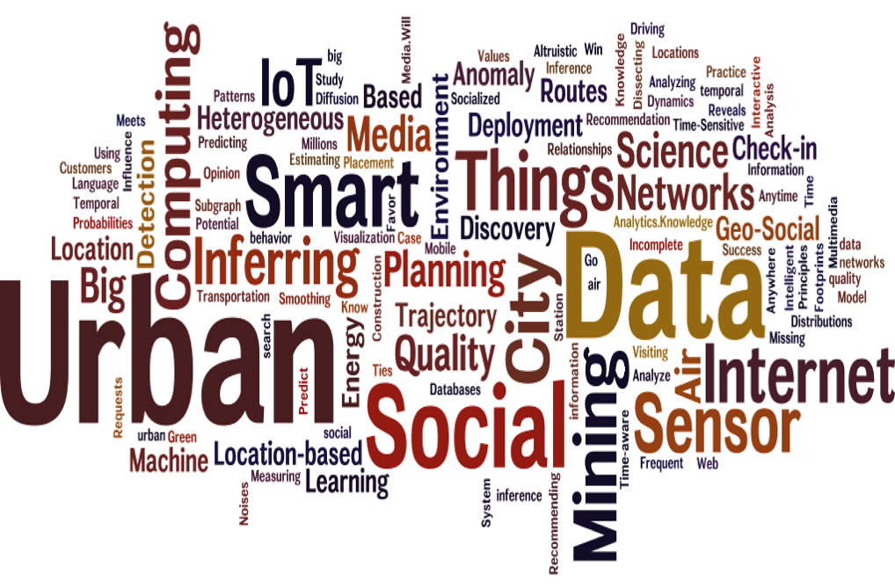
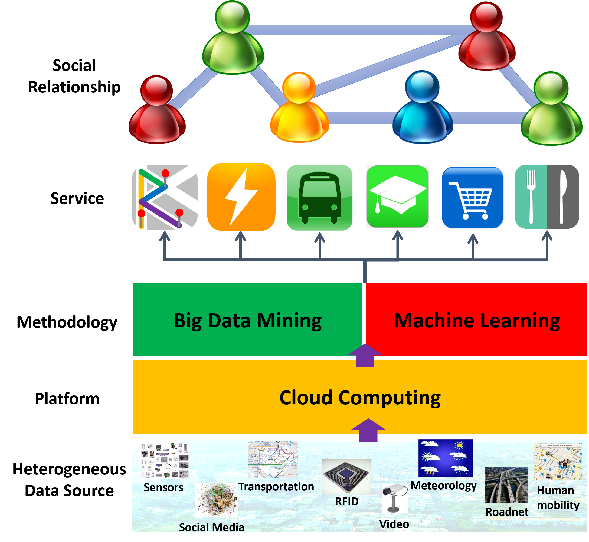
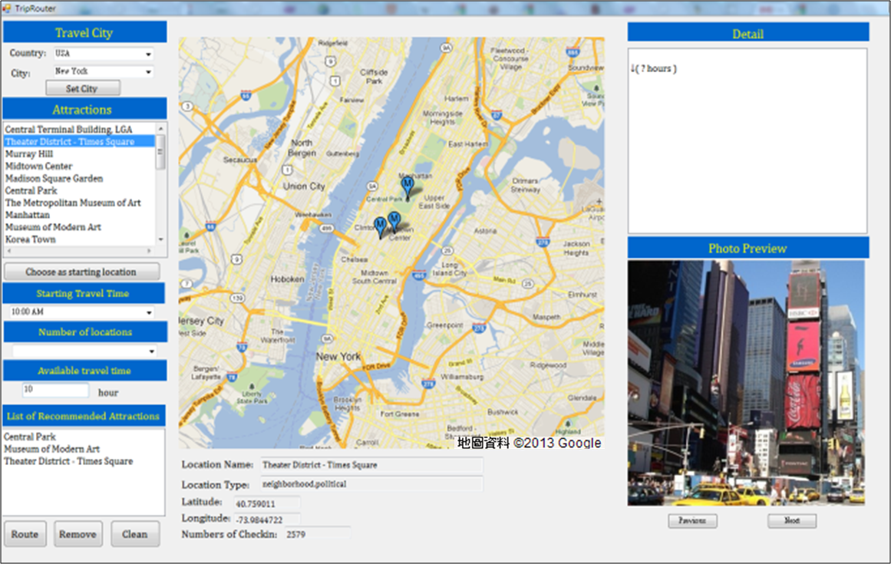
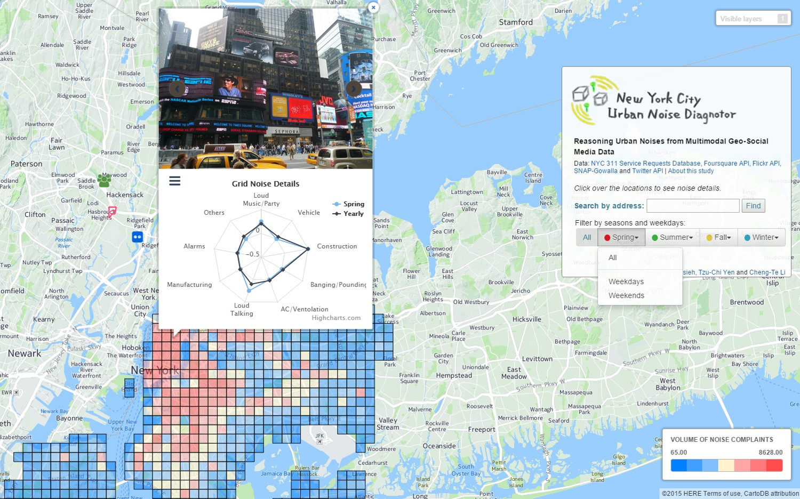
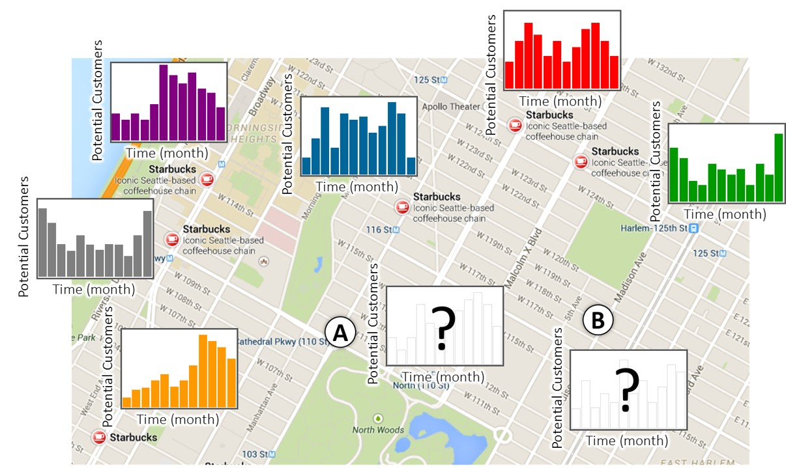

Hsun-Ping Hsieh leads Urban Science and Computing Lab(UCLAB) at Electrical Engineering Department at National Cheng Kung University.

Research Interests
- 大數據資料分析與探勘(Big Data Mining and Analytics)
- 城市科學與計算(Urban Science and Computing)
- 智慧城市與物聯網應用(Smart City and Internet of Things Applications)
- 金融科技(Fintech)
- 數位治理(Digital Governance)
- 社群網路分析(Social Network Analysis)
- 感測連結網路探勘(Sensor Network Mining)
- 機器學習(Machine Learning) 
UCLAB研究架構與流程
-
UCLAB的研究主要為應用大數據資料探勘技術與機器學習方法解決物聯網、智慧城市、感測網路、社群網路、以及各種領域所遭遇的應用問題，
設計模型根據應用情境、城市特色與考量使用者喜好提供客製化的智慧型服務與應用。

一些過去我做的研究題目供參考
IoT與城市環境計算:
結合氣象資料、及時交通流量、地區路網結構與不同類型地點分布資料來預測城市中不同重要感測數值，如空氣、噪音、人潮、犯罪率或交通流量， 並進一步與決策議題結合、針對不同應用推薦該未來需要設置的監測站點或商店地點。城市旅遊地點推薦與路徑規劃:
推薦旅遊路徑必須同時考慮四個因素：(1)地點熱門程度； (2)地點適合的拜訪時間；(3)路徑上地點的順路程度；(4)地點和地點之間的交通時間
藉由人群軌跡來直接推估使用者間的社交關係:
TBD社群網路中的頻繁互動樣式探勘:
TBD
<都市空氣品質預測與推薦站點建立(與Micorsoft合作)>

<城市噪音組成預測>

<城市中新連鎖商店(如麥當勞)設立地點推薦> 